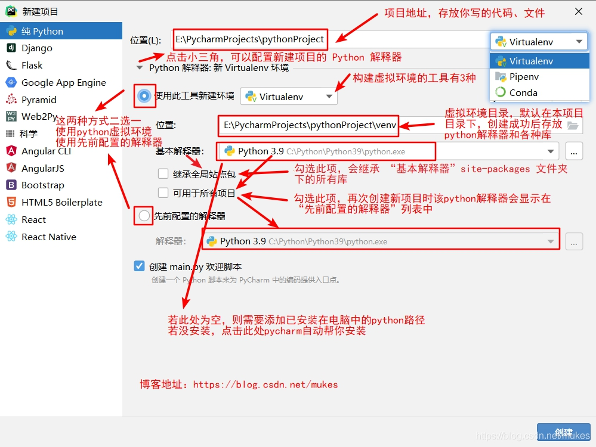
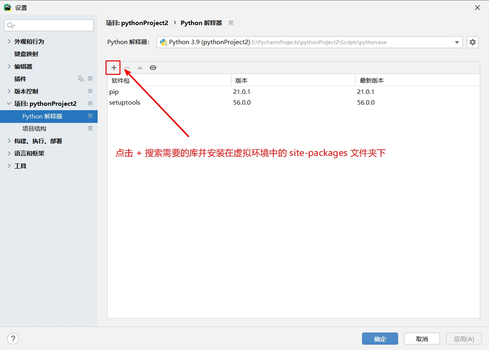
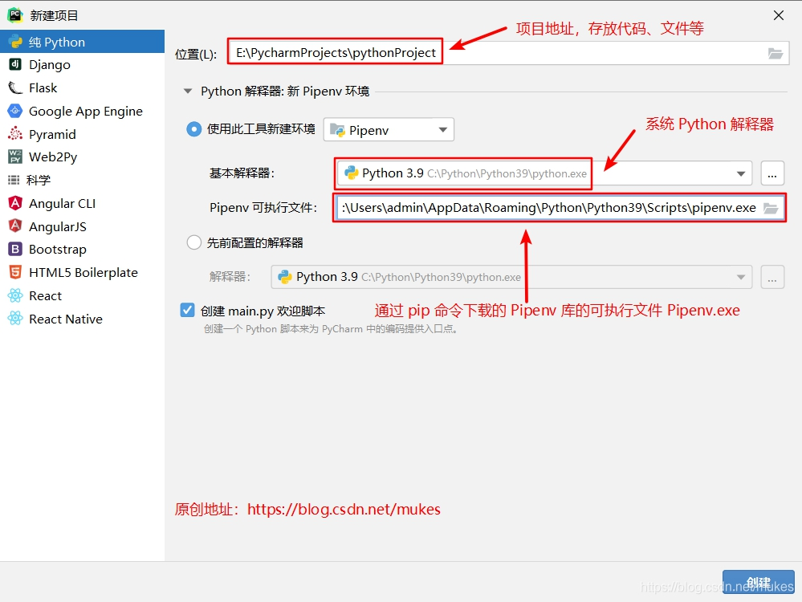
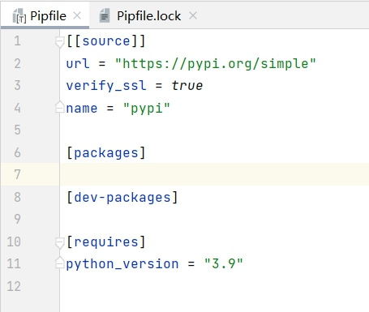
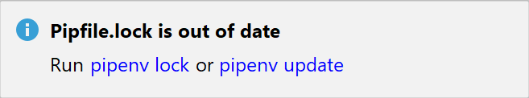
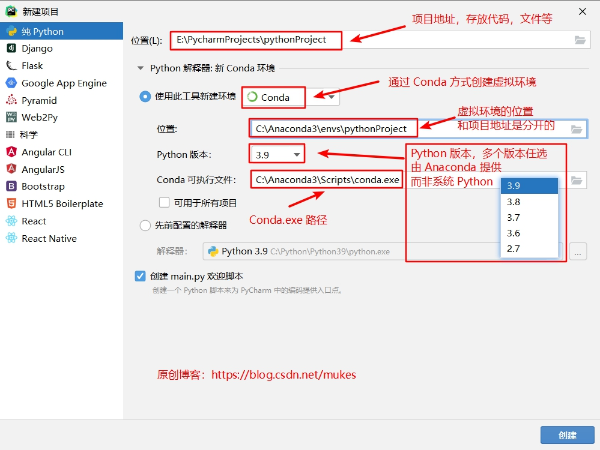
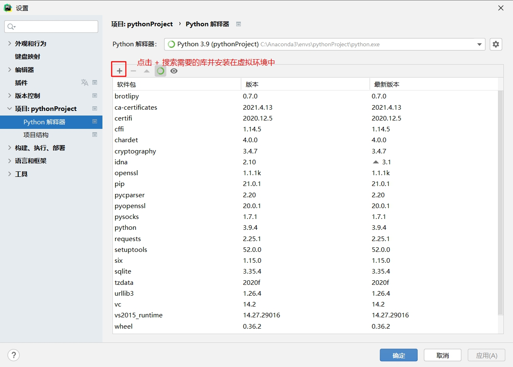

Python 应用程序经常会使用一些不属于标准库的包和模块。应用程序有时候需要某个特定版本的库，因为它需要一个特定的 bug 已得到修复的库或者它是使用了一个过时版本的库的接口编写的。
这就意味着可能无法安装一个 Python 来满足每个应用程序的要求。如果应用程序 A 需要一个特定模块的 1.0 版本但是应用程序 B 需要该模块的 2.0 版本，这两个应用程序的要求是冲突的，安装版本 1.0 或者版本 2.0 将会导致其中一个应用程序不能运行。
这个问题的解决方案就是创建一个 虚拟环境 （通常简称为 “virtualenv”），包含一个特定版本的 Python，以及一些附加的包的独立的目录树。
不同的应用程序可以使用不同的虚拟环境。为了解决前面例子中的冲突，应用程序 A 可以有自己的虚拟环境，其中安装了特定模块的 1.0 版本。而应用程序 B 拥有另外一个安装了特定模块 2.0 版本的虚拟环境。如果应用程序 B 需求一个库升级到 3.0 的话，这也不会影响到应用程序 A 的环境。
用于创建和管理虚拟环境的脚本叫做 pyvenv。pyvenv 通常会安装你可用的 Python 中最新的版本。这个脚本也能指定安装一个特定的版本的 Python，因此如果在你的系统中有多个版本的 Python 的话，你可以运行 pyvenv-3.5 或者你想要的任何版本来选择一个指定的 Python 版本。
要创建一个 virtualenv，首先决定一个你想要存放的目录接着运行 pyvenv 后面携带着目录名：
1pyvenv tutorial-env如果目录不存在的话，这将会创建一个 tutorial-env 目录，并且也在目录里面创建一个包含 Python 解释器，标准库，以及各种配套文件的 Python “副本”。
pyvenv tutorial-env是一个用于创建新的Python虚拟环境的命令。这个命令在Python 3.3到Python 3.6版本中是可用的，从Python 3.6开始，推荐使用python3 -m venv tutorial-env命令来创建虚拟环境。 虚拟环境是一个自包含的Python环境，它允许你为不同的项目安装不同的包和库版本，而不会相互干扰。这有助于保持项目的依赖关系清晰和一致，同时避免可能出现的版本冲突。 下面是如何使用python3 -m venv tutorial-env命令创建一个新的虚拟环境的步骤：
打开终端（在Windows上是命令提示符或PowerShell）。
导航到你想创建虚拟环境的目录。
输入命令
python3 -m venv tutorial-env，其中tutorial-env是你为虚拟环境指定的名字。这个命令会在当前目录下创建一个名为tutorial-env的文件夹，其中包含了Python解释器、标准库以及必要的支持文件。激活虚拟环境。在Windows上，你需要运行
tutorial-env\Scripts\activate，而在Unix或MacOS上，你需要运行source tutorial-env/bin/activate。一旦虚拟环境被激活，你的命令提示符会显示虚拟环境的名字，通常是
(tutorial-env)。在虚拟环境中，你可以使用
pip命令安装、升级或删除包，这些操作只会影响当前的虚拟环境，不会影响到系统级别的Python环境。 使用虚拟环境是一个很好的实践，因为它可以确保你的项目的依赖关系是隔离的，便于管理。
一旦你已经创建了一个虚拟环境，你必须激活它。
在 Windows 上，运行：
xxxxxxxxxx11tutorial-env/Scripts/activate在 Unix 或者 MacOS 上，运行：
xxxxxxxxxx11source tutorial-env/bin/activate（这个脚本是用 bash shell 编写的。如果你使用 csh 或者 fish shell，你应该使用 activate.csh 和 activate.fish 来替代。）
激活了虚拟环境会改变你的 shell 提示符，显示你正在使用的虚拟环境，并且修改了环境以致运行 python 将会让你得到了特定的 Python 版本。例如：
xxxxxxxxxx91-> source ~/envs/tutorial-env/bin/activate2(tutorial-env) -> python3Python 3.5.2+ (3.4:c7b9645a6f35+, May 22 2015, 09:31:25)4 ...5>>> import sys6>>> sys.path7['', '/usr/local/lib/python35.zip', ...,8'~/envs/tutorial-env/lib/python3.5/site-packages']9>>>
一旦你激活了一个虚拟环境，可以使用一个叫做 pip 程序来安装，升级以及删除包。默认情况下 pip 将会从 Python Package Index，https://pypi.python.org/pypi， 中安装包。你可以通过 web 浏览器浏览它们，或者你也能使用 pip 有限的搜索功能：
xxxxxxxxxx71(tutorial-env) -> pip search astronomy2skyfield - Elegant astronomy for Python3gary - Galactic astronomy and gravitational dynamics.4novas - The United States Naval Observatory NOVAS astronomy library5astroobs - Provides astronomy ephemeris to plan telescope observations6PyAstronomy - A collection of astronomy related tools for Python.7...pip 有许多子命令：“搜索”，“安装”，“卸载”，“freeze”（译者注：这个词语暂时没有合适的词语来翻译），等等。（请参考 installing-index 指南获取 pip 更多完整的文档。）
你可以安装一个包最新的版本，通过指定包的名称：
xxxxxxxxxx61-> pip install novas2Collecting novas3 Downloading novas-3.1.1.3.tar.gz (136kB)4Installing collected packages: novas5 Running setup.py install for novas6Successfully installed novas-3.1.1.3你也能安装一个指定版本的包，通过给出包名后面紧跟着 == 和版本号：
xxxxxxxxxx51-> pip install requests==2.6.02Collecting requests==2.6.03 Using cached requests-2.6.0-py2.py3-none-any.whl4Installing collected packages: requests5Successfully installed requests-2.6.0如果你重新运行命令（pip install requests==2.6.0），pip 会注意到要求的版本已经安装，不会去做任何事情。你也可以提供一个不同的版本号来安装，或者运行 pip install --upgrade 来升级包到最新版本：
xxxxxxxxxx71-> pip install --upgrade requests2Collecting requests3Installing collected packages: requests4 Found existing installation: requests 2.6.05 Uninstalling requests-2.6.0:6 Successfully uninstalled requests-2.6.07Successfully installed requests-2.7.0pip uninstall 后跟一个或者多个包名将会从虚拟环境中移除这些包。
pip show 将会显示一个指定的包的信息：
xxxxxxxxxx121(tutorial-env) -> pip show requests2---3Metadata-Version: 2.04Name: requests5Version: 2.7.06Summary: Python HTTP for Humans.7Home-page: http://python-requests.org8Author: Kenneth Reitz9Author-email: me@kennethreitz.com10License: Apache 2.011Location: /Users/akuchling/envs/tutorial-env/lib/python3.4/site-packages12Requires:pip list 将会列出所有安装在虚拟环境中的包：
xxxxxxxxxx61(tutorial-env) -> pip list2novas (3.1.1.3)3numpy (1.9.2)4pip (7.0.3)5requests (2.7.0)6setuptools (16.0)pip freeze 将会生成一个类似需要安装的包的列表，但是输出采用了 pip install 期望的格式。常见的做法就是把它们放在一个 requirements.txt 文件：
xxxxxxxxxx51(tutorial-env) -> pip freeze > requirements.txt2(tutorial-env) -> cat requirements.txt3novas==3.1.1.34numpy==1.9.25requests==2.7.0
pip freeze命令用于生成当前Python环境中所有已安装包及其版本的列表。这个列表的格式与pip install命令期望的格式相同，即每个包的名称后跟着其版本号，用==连接。 将pip freeze命令的输出重定向到文件requirements.txt是一种常见的做法，这样可以将当前环境的依赖关系列表保存下来。这个文件可以用来在另一个环境中重建相同的包集合，这对于确保项目在不同环境之间的一致性非常有用。 在你提供的例子中，(tutorial-env)表示用户当前处于名为tutorial-env的Python虚拟环境中。命令pip freeze > requirements.txt会将虚拟环境中所有已安装包的列表及其版本号写入到requirements.txt文件中。 接下来的命令cat requirements.txt在Unix-like系统中用于查看requirements.txt文件的内容。在这个例子中，文件内容包含三个包及其版本号：
novas==3.1.1.3
numpy==1.9.2
requests==2.7.0这意味着在tutorial-env虚拟环境中，这三个包分别安装了这些特定的版本。这个requirements.txt文件可以共享给其他开发者，或者用于在新环境中安装这些确切的包版本，只需运行以下命令：xxxxxxxxxx11pip install -r requirements.txt这会告诉
pip根据requirements.txt文件中列出的包和版本号来安装它们。
requirements.txt 能够被提交到版本控制中并且作为一个应用程序的一部分。用户们可以使用 install -r 安装所有必须的包：
xxxxxxxxxx101-> pip install -r requirements.txt2Collecting novas==3.1.1.3 (from -r requirements.txt (line 1))3 ...4Collecting numpy==1.9.2 (from -r requirements.txt (line 2))5 ...6Collecting requests==2.7.0 (from -r requirements.txt (line 3))7 ...8Installing collected packages: novas, numpy, requests9 Running setup.py install for novas10Successfully installed novas-3.1.1.3 numpy-1.9.2 requests-2.7.0pip 还有更多的选项。请参考 installing-index 指南获取关于 pip 完整的文档。当编写一个包并且在 Python Package Index 中也出现的话，请参考 distributing-index 指南。
虚拟环境和非虚拟环境该怎么选？
如果你直接在 Pycharm 创建一个项目而不创建虚拟环境，那么安装的第三方包都会安装到系统 Python 解释器的 site-packages 文件夹下，如C:\Python\Python39\Lib\site-packages。
创建越多的项目，安装的库越多。当你又新建一个项目，必定会把 site-packages 下的所有库都导进来，可能有一些库你这个项目根本就不需要，但是又不能删除（因为别的项目有在用），这时候就需要虚拟环境了。
如果你只创建一两个项目学习 Python 入门，那么用不用虚拟环境都不影响。
通过 Virtualenv 方式创建虚拟环境
在 Pycharm 创建一个新项目。
File 》New Project 》Pure Pyhon，如下图所示：

注意：现在 Pycharm 2021.1 版创建 Virtualenv 环境已默认没有 venv 文件夹，而是和项目名一致
通过 Virtualenv 创建的虚拟目录是放在本项目的下的 venv 文件夹中。
如果项目地址是 E:\PycharmProjects\pythonProject
则虚拟环境的地址就是 E:\PycharmProjects\pythonProject\venv。
虚拟环境中的库 E:\PycharmProjects\pythonProject\venv\Lib\site-packages
图中的 基本解释器 为 系统 Python 解释器，即自行在官网下载并配置好环境变量了的，一般系统 Python 解释器的第三方库都在 site-packages 目录下，比如 C:\Python\Python39\Lib\site-packages.
在 Virtualenv 环境中进行包的管理。
Ctrl+Alt+S 或者 File 》Setting 》Python Interpreter

Virtualenv 一般配合 requirements.txt 文件对项目的依赖库进行管理。
Virtualenv 一般配合 requirements.txt 文件对项目的依赖库进行管理。
xxxxxxxxxx171appdirs==1.4.42beautifulsoup4==4.9.33certifi==2020.12.54chardet==4.0.05distlib==0.3.16fake-useragent==0.1.117filelock==3.0.128idna==2.109lxml==4.6.310pipenv==2020.11.1511requests==2.25.112six==1.15.013soupsieve==2.2.114urllib3==1.26.415useragent==0.1.116virtualenv==20.4.417virtualenv-clone==0.5.4这样的结构让人一目了然，且方便项目移植，当你克隆一个含有 requirements.txt 文件的项目，可以通过相关命令一键下载所有的依赖库。
生成 requirements.txt 文件的两种方式：
打开 Pycharm ，Tool 》Sync Python Requirements 根据步骤自动生成一个 requirements.txt 文件。
打开 Pycharm 左下角的 Terminal（终端），输入以下代码：pip freeze > requirements.txt
根据 requirements.txt 文件安装依赖库：
若是导入一个新项目，且含有 requirements.txt 文件，则可根据 requirements.txt 安装所有的依赖库 pip install -r requirement.txt
更多详情： https://www.jetbrains.com/help/pycharm/2021.1/managing-dependencies.html
首先，当前版本的 Pycharm（2021.1.1） 没有内置 Pipenv，需要安装。
打开 cmd ，运行以下命令以确保系统中已安装 pip：pip --version
pipenv 通过运行以下命令进行安装：pip install --user pipenv
安装成功后在 cmd 输入以下命令：
py -m site --user-site ，会返回 pipenv.exe 所在文件夹。
如：C:\Users\admin\AppData\Roaming\Python\Python39\site-packages
为了方便起见，可以将 pipenv.exe 所在文件夹 Scripts 添加到 PATH 环境变量中
setx PATH "%PATH%;C:\Users\admin\AppData\Roaming\Python\Python39\Scripts"
打开 Pycharm ，创建一个新项目。
File 》New Project 》Pure Pyhon，如下图所示：

通过 Pipenv 创建的项目，虚拟环境并不在本项目的目录下，而是在 C:\Users\用户名\.virtualenvs 文件夹下。
Pipenv[官网]是 requests 库 的作者写的，因为 requirements.txt 的管理并不能尽善尽美，可能存在一些问题。
在 Pipenv 虚拟环境中不用 requirements.txt，Pipfile 是 Pipenv 虚拟环境用于管理项目依赖项的专用文件。 该文件对于使用 Pipenv 是必不可少的。 当为新项目或现有项目创建 Pipenv 环境时，会自动生成 Pipfile。
Pipfile 的用法如下：
新建项目的 Pipfile 文件：

通过修改此 packages 部分来添加新的程序包依赖项。
x1[packages]2requests = “*”
每当您修改 Pipfile 文件时，PyCharm 都会建议执行以下操作之一：

pipenv lock — 将新要求记录到 Pipfile.lock 文件中。
pipenv update — 将新要求记录到 Pipfile.lock 文件中，并将缺少的依赖项安装在Python 解释器上。
更多详情：https://www.jetbrains.com/help/pycharm/2021.1/using-pipfile.html
当前版本的 Pycharm（2021.1.1） 也没有内置 Conda ，需要安装。
打开 Anaconda 官网选择适合你电脑的版本即可。
也可在清华大学开源软件镜像站下载，这个速度较快。
打开 Pycharm ，创建一个新项目。
File 》 New Project 》Pure Pyhon，如下图所示：

利用 Anaconda 进行虚拟环境包的管理
打开 Anaconda Navigator 图形界面 》Environment 》选需要安装包的环境 》 点绿色按钮 》Open Terminal，在 Terminal（终端）中用 pip 命令安装包即可。
Ctrl+Alt+S 或者 File 》Setting 》Python Interpreter

引用：
Pycharm - configuring-python-interpreter [https://www.jetbrains.com/help/pycharm/2021.1/configuring-python-interpreter.html]
Pipenv 官网 [https://pipenv.pypa.io/en/latest/]